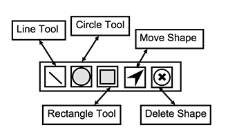
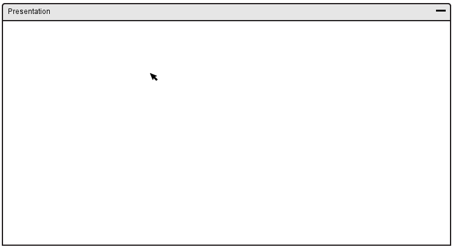
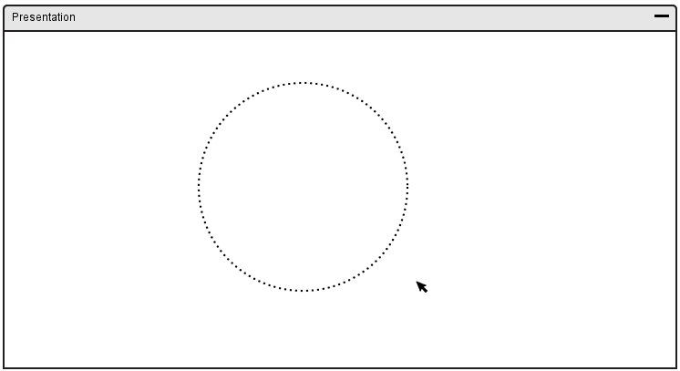

The shape tool gives the user to draw pre-defined shapes onto the canvas.
In response of the user clicking the shape tool icon, a toolbar depicting the available lines and shapes will be shown. A depiction of the toolbar is shown in Figure 58.

Figure 58: Shape Toolbar Overview.
The shape tool gives access to basic lines and shapes such as:
After clicking on the specific icon for a specific shape, the user
then has to click and hold in the starting position of the shape.
An outline of the shape should appear, and the user then has to drag
their mouse for the size desired. Lastly, the user releases their mouse.
An example of how to draw the circle is shown in Figures 59, 60, 61, and 62:

Figure 59: Drawing Circle 1.
The user clicks and holds the mouse clicker for the starting position of the shape.

Figure 60: Drawing Circle 2.
The user drags to the size of the shape wanted, indicated by the outline shown.
Figure 61: Drawing Circle 3.
Lastly, the user releases the mouse pointer.
An example of all other possible shapes that can be drawn is shown below:
Figure 62: All possible shapes.
There is also functionality to move drawn shapes using the Move Shape Tool. In order to move a shape, the user must click a shape and drag it to the new position. An example of how to move a shape is shown in Figures 63 and 64.
Figure 63: Moving Shape 1.
The user selects the shape with the mouse pointer by clicking and holding.
Figure 64: Moving Shape 2.
The user drags the shape to the new position and releases the mouse pointer.
To delete a drawn shape, the user must select a shape using the Delete Shape Tool. An example of how to delete a shape is shown in Figures 65 and 66.
Figure 65: Moving Shape 3.
To select the shape to delete, the user clicks the shape using the mouse pointer.
Figure 66: Moving Shape 4.
The shape is then deleted.